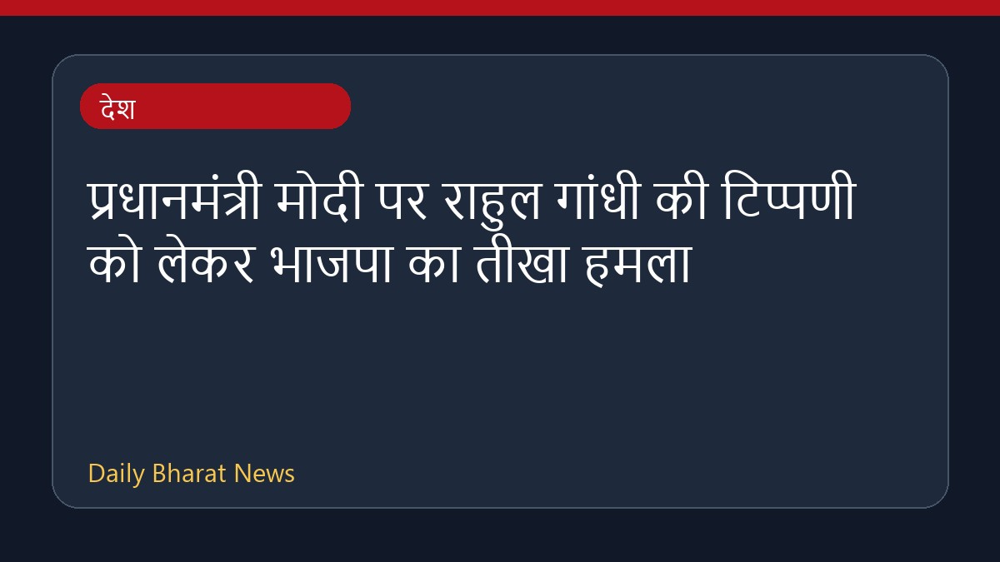

प्रधानमंत्री मोदी पर राहुल गांधी की टिप्पणी को लेकर भाजपा का तीखा हमला

कांग्रेस नेता राहुल गांधी द्वारा प्रधानमंत्री नरेंद्र मोदी पर की गई एक टिप्पणी को लेकर राजनीतिक विवाद खड़ा हो गया है। भारतीय जनता पार्टी ने इस बयान की तीखी आलोचना की है और इसे शालीनता की सीमाओं का उल्लंघन बताया है। भाजपा नेताओं ने राहुल गांधी की परिपक्वता पर सवाल उठाते हुए उन पर पलटवार किया है। इस मामले को लेकर विभिन्न मीडिया रिपोर्टों में तीखी प्रतिक्रियाएं सामने आई हैं और राजनीतिक सरगर्मी बढ़ गई है।
मूल स्रोत: India News Sources
"When Will You Grow Up?" BJP Slams Rahul Gandhi Over 'Hug' Jibe At PM Modi - NDTV ↗
"When Will You Grow Up?" BJP Slams Rahul Gandhi Over 'Hug' Jibe At PM Modi - NDTV ↗